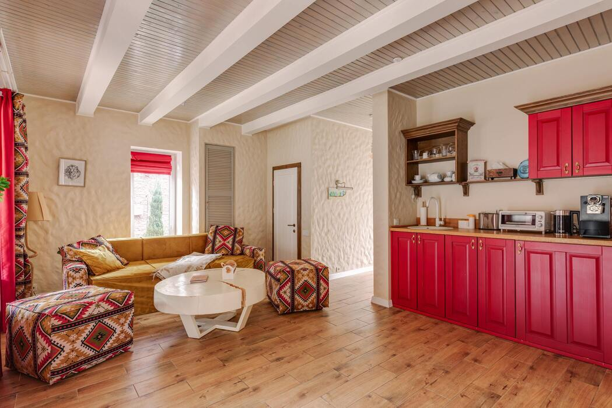

<!--inicio serviços-->
<section class="servicos banner">
    <div>
        <h3>Nossos serviços</h3>
        <div class="cards">
            <!--card item1-->
            <div class="card-item">
                
                <p class="tipo-servico">Reformas</p>
                <p class="descri-servico">Transformamos espaços por meio de reformas personalizadas, criando
                    ambientes modernos e funcionais que se adaptam perfeitamente às necessidades dos estudantes.
                </p>
            </div>
            <!--end card-itens1-->
            <!--inicio card2-->
            <div class="card-item">
                
                <p class="tipo-servico">Moradia compartilhada</p>
                <p class="descri-moradiac">Opções de moradia compartilhada, onde você pode aproveitar a
                    convivência
                    com outros estudantes, criando laços de amizade e compartilhando experiências únicas ao
                    longo de
                    sua jornada acadêmica.</p>
            </div>

            <!--end card2-->

            <!--inicio card3-->
            <div class="card-item">
                
                <p class="tipo-servico">Kitnets</p>
                <p class="descri-kitnets">Se prefere uma experiência mais privativa, conheça nossas opções de
                    kitnets
                    individuais, onde você encontrará um refúgio acolhedor e personalizado, com ambientes
                    cuidadosamente
                    projetados para oferecer conforto, funcionalidade e estilo.</p>
            </div>
        </div>
</section>